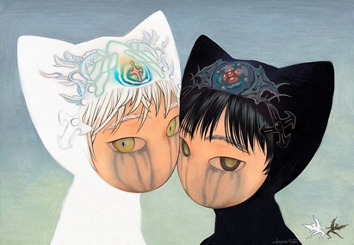

EQ##
this is mostly just ripped from wikipedia, I read through the page. I'm not really a huge fan of this sort of stuff. It all feels very self helpy, like im sure there are things that could be luminated by having a clear understanding of emotional inteligence, but I kind of belive in doing what is natual idk, thinking is the root of all problems with a lot of things like this I dont really think you can just read about it. I think you have to grow from experience.
I should probably be a bit more posotive though, there is probably a lot to be gained from
Criticisms have centered on whether EI is a real intelligence, and whether it has incremental validity over IQ and the Big Five personality traits.[10][11]' However, meta-analyses have found that certain measures of EI have validity even when controlling for IQ and personality
Currently, there are three main models of EI:
Ability model Mixed model (usually subsumed under trait EI)[33][34] Trait model
The ability-based model views emotions as useful sources of information that help one to make sense of and navigate the social environment.[37][38] The model proposes that individuals vary in their ability to process information of an emotional nature and in their ability to relate emotional processing to a wider cognition. This ability is seen to manifest itself in certain adaptive behaviors. The model claims that EI includes four types of abilities:
Perceiving emotions – the ability to detect and decipher emotions in faces, pictures, voices, and cultural artifacts—including the ability to identify one's own emotions. Perceiving emotions represents a basic aspect of emotional intelligence, as it makes all other processing of emotional information possible.
Using emotions – the ability to harness emotions to facilitate various cognitive activities, such as thinking and problem-solving. The emotionally intelligent person can capitalize fully upon his or her changing moods in order to best fit the task at hand.
Understanding emotions – the ability to comprehend emotion language and to appreciate complicated relationships among emotions. For example, understanding emotions encompasses the ability to be sensitive to slight variations between emotions, and the ability to recognize and describe how emotions evolve over time.
Managing emotions – the ability to regulate emotions in both ourselves and in others. Therefore, the emotionally intelligent person can harness emotions, even negative ones, and manage them to achieve intended goals.
Mixed model: The model introduced by Daniel Goleman[25] focuses on EI as a wide array of competencies and skills that drive leadership performance. Goleman's model outlines five main EI constructs (for more details see "What Makes A Leader" by Daniel Goleman, best of Harvard Business Review 1998):
Self-awareness – the ability to know one's emotions, strengths, weaknesses, drives, values and goals and recognize their impact on others while using gut feelings to guide decisions. Self-regulation – involves controlling or redirecting one's disruptive emotions and impulses and adapting to changing circumstances. Social skill – managing relationships to get along with others Empathy – considering other people's feelings especially when making decisions Motivation – being aware of what motivates them.
Trait model: Konstantinos V. Petrides ("K. V. Petrides") proposed a conceptual distinction between the ability based model and a trait based model of EI and has been developing the latter over many years in numerous publications.[49][50] Trait EI is "a constellation of emotional self-perceptions located at the lower levels of personality."[50] In layman's terms, trait EI refers to an individual's self-perceptions of their emotional abilities. This definition of EI encompasses behavioral dispositions and self-perceived abilities and is measured by self report, as opposed to the ability based model which refers to actual abilities, which have proven highly resistant to scientific measurement. Trait EI should be investigated within a personality framework.[51] An alternative label for the same construct is trait emotional self-efficacy.
The trait EI model is general and subsumes the Goleman model discussed above. The conceptualization of EI as a personality trait leads to a construct that lies outside the taxonomy of human cognitive ability. This is an important distinction in as much as it bears directly on the operationalization of the construct and the theories and hypotheses that are formulated about it.[49]
I do probably like the mixed model the most though I am not really sure if emotional inteligence is even the right name for this since so much of it is about paying attention to others and yourself. But yea, awareness is the most important part of emotional inteligence.
You need to be aware of yourself have a clear understanding of your own actions and how they may effect others, what things are your short comings what are you strengths, what you are willing to do what you are not willing to do, what you are insecure about and why.
Regulate your emotions, when you have an urge to act impulsivley or brashley in an emotionaly charged way, probably take a step back to. Consider why you are acting the way that you are and what the reasons are, Its often bad to start a conflict with someone out of emotion.
but yea,